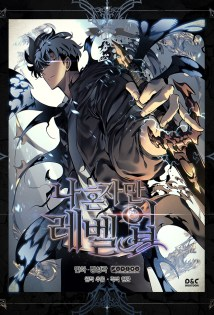
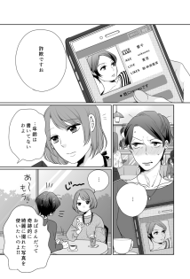
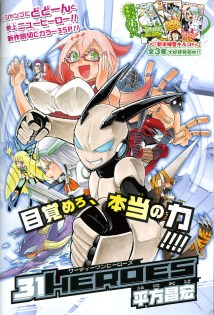
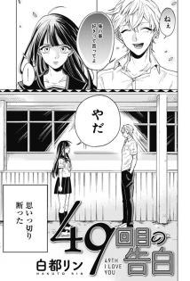

E Perpustakaan SMK Informatika CBI.
| No | Judul Buku | Pengarang | Penerbit | Gambar | Status |
|---|---|---|---|---|---|
| 01. | Naruto vol 72 | Masashi Kishimoto | Shueisha |  |
Habis |
| 02. | Tokyo revengers | Ken Wakui | Shonen |  |
Tersedia |
| 03. | Solo Leveling | Chugong 추공 | Clover |  | Tersedia |
| 04. | Martial Peak | Pikapi | Komiku | Tersedia | |
| 05. |
The Beginning After the End |
TurtleMe | Komiku | Habis | |
| 06. |
The Cute One Is You! "かわいい"はキミのもの |
Iunosu | Komiku | Tersedia | |
| 07. | 1년차 만렙 매니저 | HYEON Shink | Komiku | Tersedia | |
| 08. | 25歳差百合 | Mikawa Miso | Komiku |  | Tersedia |
| 09. |
31 Герой, thirtyone 히어로즈, サーティーワンヒーローズ |
Hirakata Masahiro | Komiku |  | Tersedia |
| 10. |
49th I Love You, 49回目の告白 |
Rin Hakuto | Komiku |  | Tersedia |